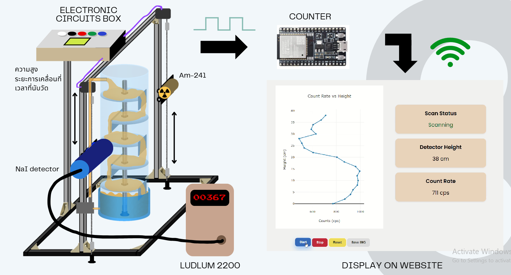

Experiment Setup

This setup illustrates the integration of the gamma source and detector system mounted on the scanning structure.
1
Movement Accuracy & Calibration

Verification of source-detector synchronized movement. The deviation was found to be within ±0.5 mm throughout the 75 cm scanning height.
2
Density Profile Analysis
Normal Case


The density profile shows sharp, consistent peaks at each tray level, indicating stable liquid holdup and structural integrity.
Damaged Cases


Peaks appear lower and broader. Indicates liquid is not being held properly, reducing phase contact time.


Results in an asymmetric profile. Shows higher liquid accumulation on one side and gas breakthrough on the other.


Missing peak at tray elevation. Identifies a fallen tray, causing massive bypass and efficiency loss.